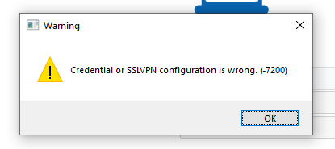

Initial Connection Issues
Most common causes for initial connection issues are either network- or authentication-related. Below is an approach one can follow to effectively identify and address the root cause for initial VPN connection failures.
Step 0 - Thoroughly understand what the issue is.
Step 0 is critical and serve as a foundation for each troubleshooting approach described in this doc. However, it won’t be explicitly mentioned going forward. Thoroughly understand what the issue is by asking questions, requesting configuration files, diagnostics, screenshots, etc.
Step 1 - Pay attention to error codes and connection progress.
Common ones here are 7200 - misconfiguration or credential error and 6005 - destination unreachable. Lack of any error codes or a connection percent count at failure can tell something as well. For instance, failure within 40-50% range is most likely caused by authentication issues. Failure at around 98% most likely points to network issues either on endpoint or network in-between endpoint and VPN server.

Step 2 - Check logs.
Client side logs:
Windows: /Users/username/AppData/Roaming/FortiClient/logs/trace on the local machine or general > current_user_logs > trace in Diagnostic_Result.zip file
macOS: /Users/username/Library/Application Support/Fortinet/FortiClient/Logs locally or VPN logs in FortiClient log export
FortiGate side: (VPN events)

Step 3 - Run FortiGate CLI diagnostics for in-depth troubleshooting.
If FortiClient logs alone don’t help, an engineer may need to retrieve additional data using FortiGate CLI diagnostic commands. Common commands one may find useful for VPN troubleshooting:
diag debug reset
diag debug console timestamp enable
diag vpn ssl debug-filter src-addr4 X.X.X.X. (public address of the endpoint)
diag debug app sslvpn -1
diag debug enable

Depending on a given case some commands can be added, removed, or modified:
- For SAML authentication troubleshooting
diag debug app samld -1can be added - For general authentication issues
diag debug app fnbamd -1can be included
Extras
Common issues that one may come across in the logs particularly in Windows environments:
Broken Pipes
Named Windows pipes are used by FortiClient to connect applications like sslvpn, fortitray, gui together so they can “chain” their inputs and outputs to complete VPN connection. In essence, pipe is a file that FortiClient’s processes create and write data to as well as read data from. Common pipe errors indicate that FortiClient either fails to write to a pipe or read from it which may result in initial connection failure.

More on Named Pipes.
Windows API Errors
When going through initial VPN connection workflow, FortiClient commands Microsoft API to send HTTPS requests to FortiGate in a form of API calls (/remote/info, /remote/saml/login, /remote/logincheck, etc.). You can spot these errors in the sslvpn logs following an API call. Example below:
[sslvpnlib 2717 error] Request /remote/saml/login failed. LastError:12152

Note, sometimes these codes will be presented in hexadecimal format, hence, have to be converted to decimal (i.e. 2745 in hex equals to 10053 in decimal format).
Searching these error codes on the Internet should give you a good understanding where to look next.
You can lookup different WSA error codes on official Microsoft web page.
Environment
Always keep an eye on the environment a given machine is in. Specifically, network environment outside of (ISP, proxies, firewalls, etc.) and within workstation (NIC, connection type (wired, wireless), drivers, security programs). The environment can play a critical role in contributing to VPN issues.
Tools that may help in troubleshooting:
- sniffer to identify network issues: Wireshark on endpoint,
diagnose sniffer packetCLI suite on FortiGate - FortiGate VPN tunnel web mode for authentication verification (allows to eliminate FortiClient from the equation and verify whether authentication fails via web browser).
- Allproducts.xml file part of every FortiClient's diagnostics contains a list of installed applications (Diagnostic_Result.zip\FCDiagData\install\Allproducts.xml)
- SystemInfo.txt included in every diagnostics file shows system information including applications, crashes, drivers, OS details, etc.
Demos
Below demos cover multiple initial connection failure scenarios and troubleshooting techniques for addressing of them.
VPN Permission Denied
It's quite common to see "Permission Denied" error as one of those causing VPN connection failures.
Below demo will demonstrate how to debug and address issues like this.
SAML Authentication Issues
SAML authentication for VPN is increasingly popular, hence, it's critical to understand how to troubleshoot it.
The following demo presents a common SAML authenitcation issue and suggets a trobleshooting approach an engineer can follow.